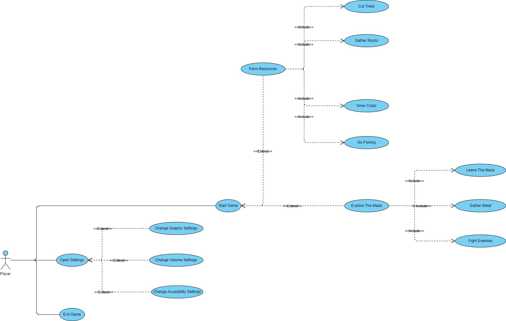

Here at SZORP we are creating a survival-adventure game where any type of player can have a good time.
SZORP is a game, where the player is put in a plains surrounded by a maze, and the goal is to escape the maze.
Through the game the player will uncover secrets about the maze, and will find interesting side stories to complete, all while getting stronger and levelling up as the days go by.
While thinking about the game, we realized, that not many games offer this type of gameplay. The game is largely based on the movie "The Maze Runner"

The map is contained in a matrix where the elements are specific tiles with attributes, such as texture, type, position.
The world is generated with Perlin-noise, where numbers are generated between
In the maze there will be zones where enemy entities are able to spawn. These spawn zones have the following attributes:
These spawners are invisible to the player and are present both in the survival zone and in the maze.
The difficulty is calculated by the formula:
These spawn zones have 2 methods:
Spawn creates an entity to a random position in the range
This method is called when the time elapsed between the last spawn exceeds the limit set by
The position of the creature is a random value calculated:
Random(
The creature is spawned with the attributes multiplied by the
Also sets the entities spawnerID to the spawners id.
CheckSpawnedCount Checks the entities in the world, if an entity has the SpawnerID set to the spawners ID, it counts as one towards a counter and returns the counters value.
In the game there are 4 types of weather randomly chosen with the chances:
Some features within the game use a system called
In context of crops, it means that every
The resource managers task is to spawn and manage resource spawners in the word
Resource Spawners are working with zones, these zones have:
And methods:
TrySpawn This will be called any time the spawn timer ticks down, when this method is called, it checks if the resources present in the zone are less than the richness of the zone
If less, then spawn
CheckResourceCount Checks if the resource spawners richness limit is reached, returns the resources in the area of the spawner.
The effect manager controls the effects on entities (
Properties:
Indices are the following:
1 Health
2 Strength
3 Armor
4 Speed
This number has to be at least
Methods:
Pass Time(
Remove Effect(
Apply Effect(
The entity class describes each creature present in the game, they have stats:
Generalized methods:
PassTime(
Passive entities wander around, they have no interaction with the player until the player attacks or interacts with them
Bulls, attack back when attacked, other animals flee from the payer.
Passive entities:
Properties:
Methods:
Flee : If this method is called the flee variable is set
Wonder : This method gets called at random intervals (10 - 30 seconds), and gets a random walkable position in an area of 20 tiles
The cool-down begins when the creature finishes the wonder.
Aggressive entities target the player when the player enter their line of sight, they have an attack that reduces the players hp on impact Aggressive entity list: Robot spider, Robot hunter (human-like, shoots projectiles)
The game manager component is the most important part of the game. It controls everything, from the day and night cycles all the way through to the map generation, including the spawners
control system. Inside this component in the frame update method,
This component exists both in the menu and the game itself, it runs in the background, manages saves, loads, developer console.
At every scene it is present from the beginning and all other elements are created by it, so it is important that the systems implemented into it work reliably and effectively, so the performance
does not decrease. As the game progresses this component will have
This variable determines the width and the height of the survival zone,
Map sizes:
This variable sets the size of the maze, the maze is equal length in all directions
This matrix contains the survival map tiles generated and managed
This matrix contains the maze map tiles generated and managed
This variable means how many ticks are in a second, in the update method there is a check if the elapsed time between ticks is equals to
Generate Map
This method generates both the survival zone and the maze. Starting with the survival field. It starts with creating a matrix for the survival field, then generates the tiles for it,
then proceeds to create a matrix for the maze, then generating random paths inside.
Load Map
If this method is called, both the survival and maze map gets rendered into the scene the player currently is located.
Load Save(
If this method is called, gets all data from the save file from the location, then creates every object from it.
Ready
When the component is created, the ready method gets called, it calls the Generate Map method, then the Load Map
method, if there is no save file given, if there is a save file given, then just call the Load Save method.
Process(
This method is called every frame where
From the delta we know the passed time, so we check for
The main menu will be the game’s level 0, which means this will be the first thing which is appears every time someone starts up the game. During startups and coming back to the main menu from playing the game, the game will search for a save file. If it fails to find one then the continue button will be disabled. Otherwise, the continue button will be available. Next to this button there will be a new game, options, how to play and quit button.
After the press of the new game button a new window will appear where the player can select the game mode he/she would like to play. This will be possible by click on the button of the game mode which will also start the game. If the game already has a save it will ask the user whether he/she want to overwrite that save or not. It will appear on a new window which will contains 2 buttons too.
The continue button will delete the previous save and start the game, the cancel button will take the player back to the main menu. If the user changed his/her mind before the game mode selection, there is a possibility to go back with the back button.
Clicking on the quit button is also going to appear a new window which will ask the user whether he/she wants to leave the game with 2 buttons under it. If the player presses the yes the game will start the exit sequence otherwise the no button will go back to the main menu.
The how to play button will bring up a new window by pressing it which describes the game and all the different game modes shortly. This window will also have a back button which takes the player back to the main menu.
In this gripping and immersive gaming experience, players will find themselves thrust into the heart of a labyrinthine world. The game's usability is designed to seamlessly blend excitement with strategic thinking, as players navigate through intricate mazes filled with suspenseful twists and turns. Intuitive controls and a user-friendly interface ensure that both novice and experienced gamers can easily delve into the adrenaline-pumping action. Engaging puzzles, dynamic obstacles, and a captivating storyline enhance the overall usability, creating an unforgettable gaming adventure.
Our game has a pretty easy learning curve, so it is easy to get started anytime for younger and older folks too. Our goal was to create a game that is enjoyable and does not provide too much difficulty, however the player can decide to enter a harder difficulty, where things are not as simple, those game modes even have their unique elements, so their curve is steeper but still on the easier side.
Since this is an offline game, after installation there should not be any downtime, so you can play any time you want to. If at any point the player encounters a bug where they cannot start the game, we are easy to reach to fix that bug as soon as possible.
Our response usually takes 12 hours maximum on weekdays, and the average bugfix is about 1 hour, so the time the player cannot play is roughly 13 hours (MTTR = 13 hours), but it should happen about once a month maximum (MTBF = 1 month).
FPS / CPU: We aim to achieve 60 FPS on low-end hardware to make it more accessible, currently a 2.4 GHz 4 core CPU is enough for our calculations in the current state of the game.
Memory: With our texture sizes(32*32) relatively few memory is reserved for textures, and with the maximum amount of entities allowed in our game, the maximum memory usage is 500MB.
Disk space: The game does not take up that many space on the storage devices, it is currently 120 MB at this rate the end product will approximately will be 250 MB
With us documenting every development step, and our code is easy to read thanks to famous coding conventions, development in the future will be easy for those, who plan on modding and/or developing the game further.
Error Managing: C# has a robust exception handler, so if at any point an error occurs in the system, the user gets notified and if they decide to, they can send us the error message for diagnostic reasons, since the default error manager writes in great detail about the exception.
Every crash report is stored in the games' directory, if the player wants to they can read back at any time what were their crashes.
Plagiarism: We don't want to full-on copy the Maze Runner movie it just gave us an idea that we really clicked with. However, it might not be our intentions some elements might be too similar, so we have to rework those elements for it not to be like in the movie.
Hardware limitations: We would like to create a bigger and more detailed world for our game, but unfortunately it would be too resource heavy on all computers, now we use a 128*128 world which is large enough, but we think if we took it up to 1024^1024 it would be a better experience. That is sadly not can not be done since it even runs slow on our computers, so we cant test with those.
Language limitations: C# is great for many things, but it is an object-oriented programming language so many elements are taking up more resources than they should be, so in larger scales it slows down the game, this is partly the reason for the map size we said in the hardware limitations section. It is not the main reason, but it does not help. Lookups are slower, but calculations run faster than in other languages (Based on our testing, with code snippets from the game), so we stick with this language.
Time limitations: Due to exams coming up, our development progress in the game greatly decreased, since we have lots of classes to study for, this in itself hugely impacts the speed the game is getting developed, and our attempts at rushed development just took us backwards in the project.
During the development we opted for PascalCase and Snake_Case to make our code more readable, we also avoided recursion for safer code.